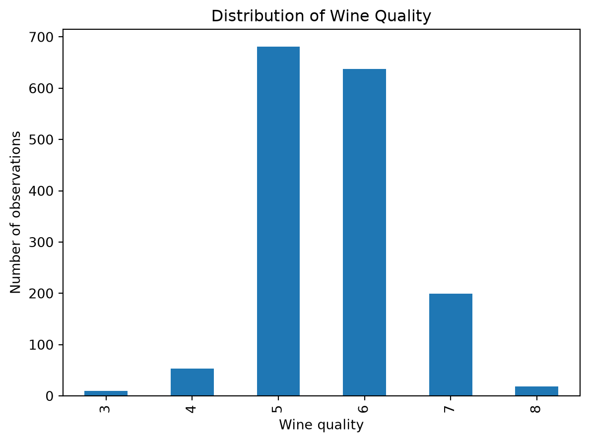
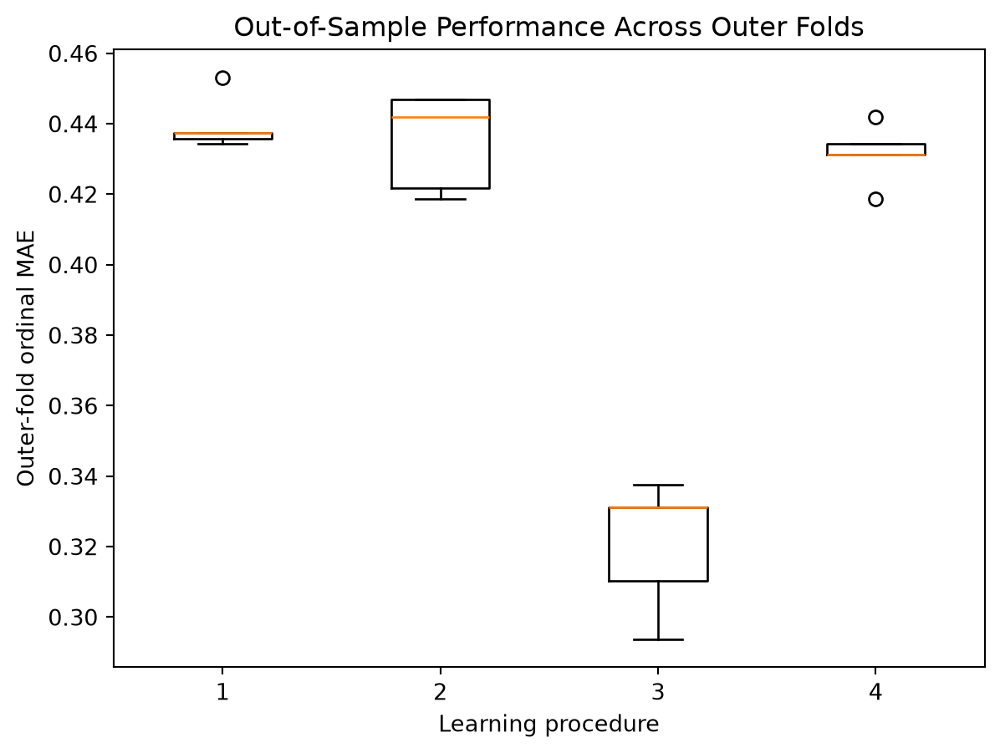
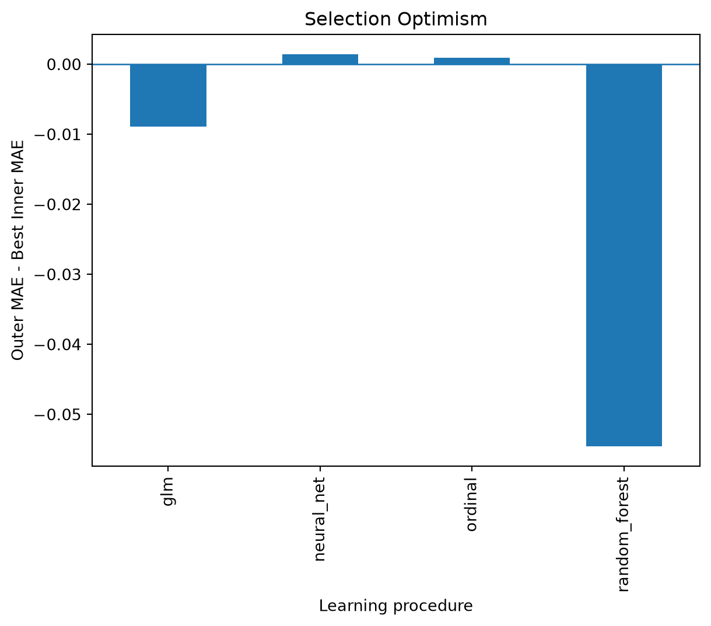
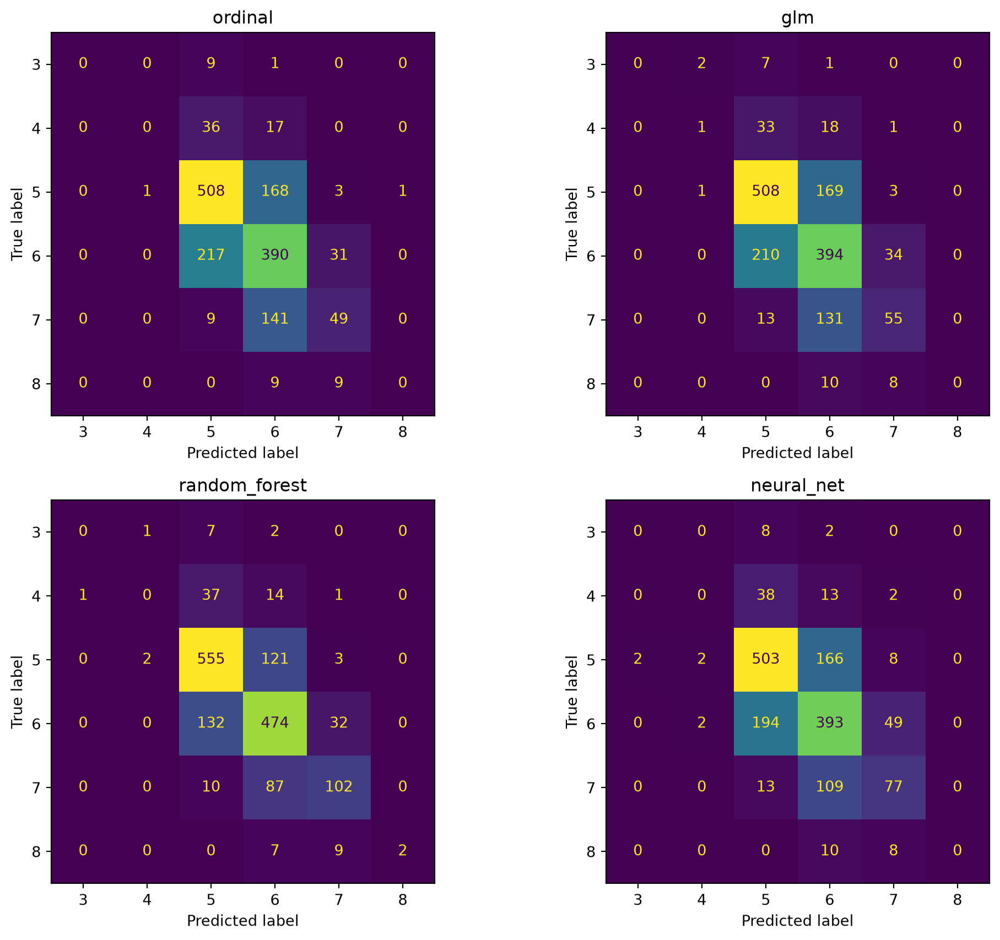
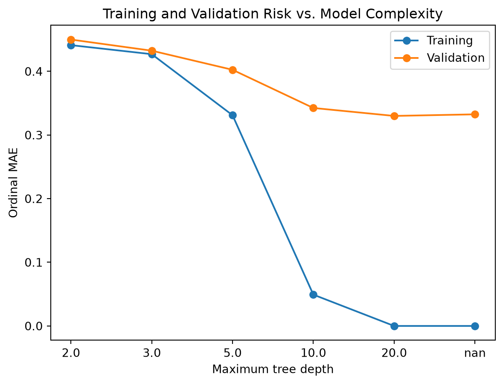
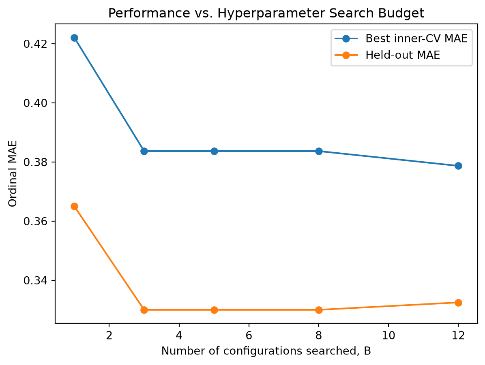
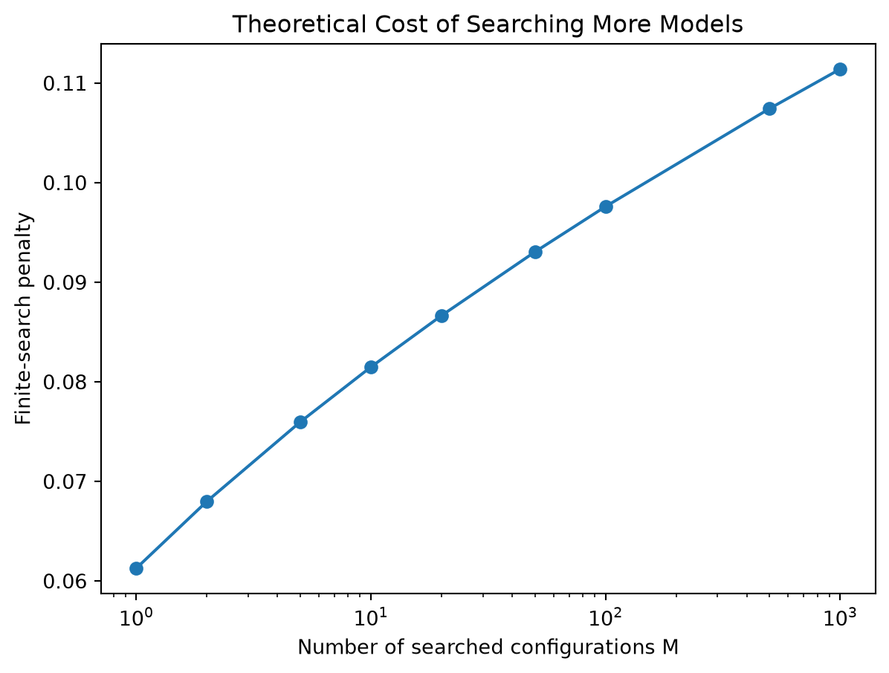
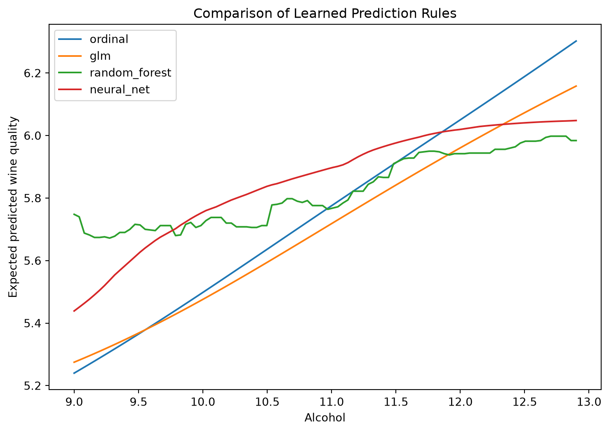
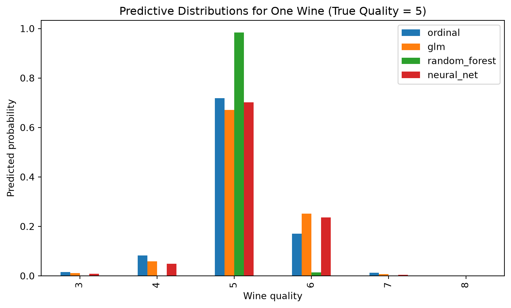

graph TD
A[Outer Training Sample] --> B[Hyperparameter Tuning]
B --> C[Model Fitting]
C --> D[Performance Evaluation]
D --> E[Average Performance]
5 Model Comparison Under Complexity and Tuning Constraints
1 The Statistical Problem of Model Comparison
The comparison of predictive models is often presented as a empirical exercise: we just need to fit several models to the data, compute some performance metric, and then select the model with the best value. This approach is incomplete, however, because the observed performance of a fitted model depends not only on the model itself, but also on the amount of flexibility, tuning, computational resources, and model-selection effort that was permitted during training.
A useful (but often overlooked, although as a PhD student I think we should all be aware of it) starting point is to distinguish a fitted model from a learning procedure. Let \(D_n=\{Z_i=(X_i, Y_i)\}_{i=1}^n\overset{iid}{\sim} P\) denote a training sample from an unknown population distribution \(P\). A learning procedure \(\mathcal A\) maps the training data into a fitted prediction rule \(\widehat{f}_{D_n}=\mathcal A(D_n)\). Note that the procedure \(\mathcal A\) may involve a number of tuning parameters, any preprocessing steps, the choice of model class itself, and any other data-dependent decision used to produce the final predictor (Dietterich (1998)).
Given a loss function \(L(Y, \widehat{f}(X))\), the population risk of a fixed prediction rule \(\widehat{f}\) is defined as \(R(f)=\E_{(X, Y)\sim P}\left[L(Y, \widehat{f}(X))\right]\). Then its empirical counterpart is the training risk, defined as \(\widehat{R}_n(\widehat{f})=\frac{1}{n}\sum_{i=1}^n L(Y_i, \widehat{f}(X_i))\).
For comparison studies, however, the more relevant object is the performance of the learning procedure \(\mathcal A\) itself,
\[ R(\mathcal A;n)=\E_{D_n\sim P^n}\left[R\bigl(\mathcal A(D_n)\bigr)\right] \]
Different training samples can produce different fitted models, different hyperparameters, and therefore different generalization performance. a fair comparison should therefore estimate the risk of the entire learning procedure \(\mathcal A\), rather than treating one fitted model as though it were fixed in advance.
This distinction appears throughout the literature on model selection and performance assessment. Stone’s work formalized cross-validation as a method for both predictive choice and assessment, while later work emphasized that model selection itself introduces an additional level of statistical uncertainty that must be accounted for when estimating the risk of a learning procedure (Stone (1974), Cawley and Talbot (n.d.)).
1.1 Complexity and the empirical-risk principle
Suppose that a candidate predictor is chosen from a function class \(\mathcal F\). Empirical risk minimization (ERM) is the principle of choosing a fitted model \(\widehat{f}_{D_n}\in\mathcal F\) that minimizes the training risk \(\widehat{R}_n(\widehat{f})\):
\[ \widehat{f} = \arg\min_{f\in\mathcal F} \widehat{R}_n(f) \]
If \(\mathcal F\) is extremely restricted, the selected function may not approximate the population relationship adequately. If \(\mathcal F\) is extremly rich, however, minimizing empirical risk may exploit random features of the observed sample. Consequently, \(\widehat{R}_n(\widehat{f})\) may be a poor estimate of the population risk \(R(\widehat{f})\).
This is the setting underlying Vapnik’s structural risk minimization principle (Vapnik (1991)). Rather than considering a single function class \(\mathcal F\), structural risk minimization introduces a nested sequence of function classes \(\mathcal{F}_1 \subset \mathcal F_2 \subset \cdots \subset \mathcal F_K\), with increasing statistical capacity. The empirical risk typically decreases as the class becomes richer, but uncertainty in the relationship between empirical and population risk increases. SRM selects the class that balances these competing effects.
1.2 Capacity measures and generalization bounds
Classical Vapnik-Chervoneskis theory expresses the complexity of a hypothesis class through its VC dimension. A finite VC dimension allows a probabilistic bound between empirical and population error, motivating the principle that larger function classes require more observations for reliable generalization. Vapnik’s SRM framework therefore provides a theoretical justification for controlling model complexity rather than comparing arbitrarily flexible procedures only by their training performance.
Later work developed data-dependent complexity measures. An example is the Rademacher complexity (Bartlett and Mendelson (2001)). Given observations \(Z_1, \ldots, Z_n\) and a class of real-valued functions \(\mathcal G\), its empirical Rademacher complexity is defined as
\[ \widehat{\mathfrak{R}}_n(\mathcal G) = \E_\sigma\left[\sup_{g\in\mathcal G}\frac{1}{n}\sum_{i=1}^n \sigma_i g(Z_i) \,\middle|\, Z_1, \ldots, Z_n\right] \]
where \(\sigma_1, \ldots, \sigma_n\) are independent Rademacher random variables taking values in \(\{-1, 1\}\) with equal probability, e.g., \(\P(\sigma_i=1)=\P(\sigma_i=-1)=1/2\).
The random signs deliberatelly destroy systematic structure. A function class that can nevertheless correlate strongly with these randmo signs is sufficiently flexible to fit noise and therefore has high complexity. A representative Rademacher genralization result can be stated as follows.
Theorem 1 Let \(\mathcal G\) be a class of loss functions taking values in \([0, 1]\). Under i.i.d sampling, with probability at least \(1-\delta\), simultaneously for all \(g\in\mathcal G\),
\[ \E[g(Z)] \leq \frac{1}{n}\sum_{i=1}^n g(Z_i) + 2\widehat{\mathfrak{R}}_n(\mathcal G) + 3\sqrt{\frac{\log(2/\delta)}{2n}} \]
The precise constants vary with the definition of empirical versus expected Rademacher complexity, but the important structure is
\[ R(f) \lesssim \widehat{R}_n(f) + \text{Complexity}(\mathcal F) + \text{SamplingUncertainty}(n, \delta) \]
Barlett and Mendelson developed general risk bounds of this form and showed how Rademacher and Gaussian complexities can characterize rich learning classes.
These theories establish an important principle for model comparison, but they do not imply that every empirical comparison should assign all learning algorithms an identical VC dimension or Rademacher complexity. For heterogeneous model classes, such quantities may be difficult to compute, extremely loose, or structurally incomparable. Consequently, complexity theory is most useful here as a theoretical explanation for why uncontrolled flexibility is problematic. Practical comparison requires an additional mechanism.
2 Model Selection, Cross Validation, and Nested Evaluation
Cross-validation provides the principal empirical mechanism for estimating generalization performance without requiring a separate large test sample. Stone (1974) established the use of cross validation for predictive assessment and model choice.
Suppose that the observations are divided into \(K\) folds \(\mathcal I_1, \ldots, \mathcal I_K\). For each fold \(k\), let \(D_{-k}= D_n \setminus \mathcal I_k\) denote the training observations and let \(\widehat f^{(-k)} =\mathcal A(D_{-k})\) denote the fitted model obtained by applying the learning procedure to the training folds. Then the \(K\)-fold cross-validation estimate is
\[ \widehat R_{CV} = \frac{1}{n} \sum_{k=1}^K \sum_{i\in \mathcal I_k} L(Y_i, \widehat f^{(-k)}(X_i)). \]
This estimator is valid only with respect to the procedure that actually occurs inside each training fold. If tuning, preprocessing, or other data-dependent choices are made using observations that later act as validation observations, the resulting estimate no longer represents performance on genuinely unseen data.
2.1 Hyperparameter selection
Let \(\lambda\in \Lambda\) denote a hyperparameter configuration and suppose cross-validation produces an estimate \(\widehat{R}_{CV}(\lambda)\) of the risk of the fitted model \(\widehat f_\lambda\) obtained by applying the learning procedure with hyperparameter \(\lambda\). During model selection, we choose the hyperparameter \(\widehat \lambda = \arg\min_{\lambda\in\Lambda} \widehat{R}_{CV}(\lambda)\).
Some may argue to report \(\widehat R_{CV}(\widehat \lambda) = \min_{\lambda\in\Lambda} \widehat{R}_{CV}(\lambda)\) as the performance of the selected procedure. This is generally optimistic because the same random quantities have been used both for selection and assessment.
The phenomenon can be seen from a simple expectation argument. Even if every candidate estimator were individually unbiased (\(\E[\widehat{R}_{CV}(\lambda)] = R(\lambda)\)), the minimum satisfies \(\E[\min_{\lambda\in\Lambda} \widehat{R}_{CV}(\lambda)] \leq \min_{\lambda\in\Lambda} \E[\widehat{R}_{CV}(\lambda)]\). Therefore,
\[ \E[\widehat{R}_{CV}(\widehat \lambda)] \leq \min_{\lambda\in\Lambda} R(\lambda) \]
under this idealized setting. The selection process preferentially chooses configurations whose estimated errors happen to be low because of both genuine performance and favorable sampling noise. As the number of configurations considered increases, there are more opportunities for this selection bias to occur.
Cawley and Talbot (n.d.) studied this phenomenon in detail. They emphasized that a model-selection criterion itself can be overfit and demonstrated that the magnitude of selection-induced bias can be comparable to the differences in performance often reported between learning algorithms. Varma and Simon (2006) similarly demonstrated that using cross-valiation both to optimize a classifier and to estimate its final prediction error results in optimistic bias. They showed that nesting the tuning procedure inside an outer evaluation loop can eliminate this bias.
2.2 Nested cross-validation
Nested cross-validation separates model selection from model assessment. Suppose the data are first partitioned into outer folds \(\mathcal I_1^{\text{out}}, \ldots, \mathcal I_K^{\text{out}}\). For outer fold \(k\), let \(D_{-k}^{\text{out}} = D_n \setminus \mathcal I_k^{\text{out}}\) denote the training observations. Within \(D_{-k}^{\text{out}}\), an inner cross-validation procedure selects
\[ \hat \lambda^{(k)} = \arg\min_{\lambda\in\Lambda} \widehat{R}_{\text{inner, k}}(\lambda) \]
where \(\widehat{R}_{\text{inner, k}}(\lambda)\) is the cross-validation estimate of the risk of the fitted model \(\widehat f_\lambda^{(-k)}\) obtained by applying the learning procedure with hyperparameter \(\lambda\) to the inner training folds. The selected configuration is then fitted using the complete outer training set \(\hat f_k = \mathcal A_{\overline{\lambda}_k}(D_{-k}^{\text{out}})\) and evaluated only once on the outer test fold. The nested estimate becomes
\[ \widehat{R}_{\text{nested}} = \frac{1}{n} \sum_{k=1}^K \sum_{i\in \mathcal I_k^{\text{out}}} L(Y_i, \hat f_k(X_i)) \]
The main property is that \(\mathcal I_k^{\text{out}}\) does not participate in the determination of \(\hat \lambda^{(k)}\) or \(\hat f_k\). All data-dependent decisions must therefore occur inside the outer training sample. This includes not only conventional hyperparameters but also preprocessing, transformation, variable selection, and any other adaptive operation. Nested cross-validation should consequently be interpreted as an estimator of the performance of an entire procedure from \(D\) to \(\hat f\), rather than the performance of a single fitted model. This interpretation is consistent with the earlier discussion of learning procedures and the distinction between fitted models and the procedures that produce them.
3 Tuning Complexity and Resource-Constrained comparison
Structural risk minimization addresses the statistical capacity of a hypothesis class, but modern empirical studies contain another form of complexity: search complexity. Suppose one learning procedure is evaluated at only a small number of configurations while another receives hundreds or thousands of optimization attempts. Even if their final fitted predictors had similar representational complexity, the latter procedure has received more opportunitiy to adapt to the validation data.
Cawley and Talbot (n.d.) analysis makes clear that this optimization should itself be regarded as a statistical procedure. Modern hyperparameter optimization literature reaches the same comclusion from the computational perspective: hyperparameters can influence predictive performance, and tuning must therefore be incorporated into experimental design (Bischl et al. (2021)).
3.1 Hyperparameter optimization as part of the learning algorithm
Let \(\Lambda_j\) denote the admissible hyperparameter space for learning procedure \(\mathcal A_j\), and let \(B\) represent a tuning-resource budget. Rather than imagining that procedure \(\mathcal A_j\) automatically achieves \(\inf_{\lambda\in\Lambda_j} R_j(\lambda)\), which amounts to giving it an oracle capable of finding its optimal configuration, define the configurations actually evaluated under budget \(B\) as
\[ S_j(B) \subseteq \Lambda_j. \]
The selected configuration is
\[ \hat \lambda_j(B) = \arg\min_{\lambda\in S_j(B)} \widehat{R}_{CV}(\lambda) \]
The complete budget-constrained learning procedure may therefore be written
\[ \mathcal A_{j, B}(D) = \text{Fit}(D, \hat \lambda_j(B)) \]
The appropriate quantity for comparison is then
\[ R_j(B) = \E_D[R(\mathcal A_{j, B}(D))] \]
This formula changes the scientific question from “which method can achieve the best performance” to “which learning procedure performs best under a specified resource budget”. The latter is usually more reproducible and more representative of practical model development.
3.2 Search algorithms and budget definition
Grid search historically provided a simple way to explore hyperparameters, but it becomes inefficient when only a subset of hyperparameters has substantial influence on performance. Bergstra et al. (n.d.) showed that random search can explore such spaces more efficiently because it does not repeatedly evaluate the same values of important coordinates as occurs in a Cartesian grid. They also emphasized random search as a reproducible baseline for hyperparameter optimization.
Later methods made the computational budget itself an explicit object of optimization. Hyperband, for example, treats hyperparameter search as a resource-allocation problem and devotes more resources to promising configurations while terminating poor configurations early (Li et al. (n.d.)). For a comparison study, however, the objective is not to use the most sophisticated tuning algorithm. The more fundamental requirement is that the tuning protocol be pre-specified and comparable across procedures.
A useful comparison can therefore study a sequence \(B_1 < B_2 < \ldots < B_m\) and estimate \(R_j(B_k)\) for each procedure \(j\) and budget \(B_k\). Instead of reporting only one optimized number, this produces a performance-versus-budget curve that can be interpreted as a reproducible characterization of the learning procedure. Such a curve distinguishes two different conclusions: \(R_A(B) < R_B(B)\) for small \(B\) while perhaps \(R_A(B) > R_B(B)\) for sufficiently large \(B\). The first procedure may therefore be preferable under limited tuning resources even if the second eventually obtains better predictive performance.
The need to account for tuning effort has been demonstrated empirically in benchmarking research. Sivaprasad et al. (2019), for example, showed that conclusions about optimization algorithms can change when the computational cost required to find favorable hyperparameters is incorporated into the comparison. Bischl et al. (2021) similarly treat resampling, search-space definition, optimization algorithms, computational cost, and over-tuning as integral components of hyperparameter optimization rather than incidental implementation details. A well-designed comparison study should therefore pre-specify the tuning protocol and report performance as a function of the resources allocated to that protocol.
3.3 Neutrality of comparison
The problem is broader than tuning along. Boulesteix et al. (2013) argued for neutral comparison studies, noting that comparisons can favor a method when investigators devote considerably more attention to its configuration than to competing procedures. Their proposal emphasizes that comparisons itself should be regarded as a scientific study with a pre-specifed and reproducible protocol.
This suggests several general requirements:
- the search space for every learning procedure should be defined before observing final test results;
- preprocessing and tuning should be applied through the same outer evaluation framework;
- tuning resources should be limited and documented;
- no procedures should receive additional manual optimization because preliminary results were unfavorable;
- the final comparison should be performed on predictions generated from observations not used in the corresponding selection process.
The objective is to make their opportunity to demonstrate predictive ability comparable and transparent.
4 Statistical Comparison and a Unified Evaluation Framework
Once performance has been obtained using a valid outer resampling scheme, another question remains:
Is the observed performance difference sufficiently large to be meaningful?
Suppose two learning procedures are evaluated on the same \(R\) resamples. Let \(d_r = L_{A,r} - L_{B, r}\) be their paired difference on resample \(r\), with
\[ \overline d = \frac{1}{R}\sum_{r=1}^R d_r \]
and sample variance
\[ s_d^2 = \frac{1}{R-1}\sum_{r=1}^R (d_r - \overline d)^2 \]
It is tempting to apply an ordinary paired \(t\)-test to these values. This treats resampled differences as though they were independent, which they generally are not because their training sets overlap. Dietterich (1998) showed that commonly used tests for comparing learning algorithms can have substantially different Type I error behavior and emphasized that dependence introduced by resampling must be considered.
Nadeau and Bengio (2003) developed variance corrections that account approximately for dependence caused by overlapping training samples. Their corrected resampled variance takes the form
\[ \widehat{\var}(\overline{d}) \approx \left(\frac{1}{R}+\frac{n_{\text{test}}}{n_{\text{train}}}\right)s^2_d, \]
leading to the statistic
\[ t = \frac{\overline{d}}{\sqrt{\left(\frac{1}{R}+ \frac{n_{\text{test}}}{n_{\text{train}}}\right)s^2_d}} \]
The correction is larger than the naive variance \(\frac{s_d^2}{R}\), reflecting the fact repeated estimates obtained from heavily overlapping training samples contain less independent information than \(R\) independent experiments. For comparisons conducted over several independent datasets, the experimental unit changes. Demsar and Demsar (n.d.) recommends rank-based procedures, particularly the Wilcoxon signed-rank test for two algorithms and the Friedman test followed by appropriate post-hoc comparisons when more than two algorithms are evaluated across multiple datasets.
For \(K\) algorithms evaluated on \(N\) datasets, let \(R_{j}\) denote the average rank of algorithm \(j\). The Friedman statistic may be written
\[ \chi^2_F = \frac{12N}{K(K+1)}\left[\sum_{j=1}^K R_j^2 - \frac{K(K+1)^2}{4}\right] \]
The null hypothesis is that the algorithms have equivalent performance and therefore equivalent expected ranks.
5 Summary
The literature reviewed above suggests that no single complexity statistic provides a satisfactory universal fairness constraint across heterogeneous learning procedures. A stronger framework is obtained by combining capacity awareness, nested evaluation, and resource-controlled tuning. Let the competing learning procedures by
\[ \mathcal A_1, \ldots, \mathcal A_J. \]
For each procedure \(j\), define in advance \(\Lambda_j\) = allowable hyperparameter configurations together with a common tuning protocol \(S\) and resource budget \(B\). Within every outer training sample, perform \(\hat \lambda_{j, k} = \text{Tune}(\mathcal A_j, D_{-k}^{\text{out}}, \Lambda_j, B)\) then fit
\[ \hat f_{j, k} = \mathcal A_j(D_{-k}^{\text{out}}, \hat \lambda_{j, k}) \]
and evaluate
\[ \hat{R}_{j, k} = \frac{1}{|\mathcal I_k^{\text{out}}|}\sum_{i\in \mathcal I_k^{\text{out}}} L(Y_i, \hat f_{j, k}(X_i)). \]
Finally, report the average performance \(\hat{R}_j = \frac{1}{K}\sum_{k=1}^K \hat{R}_{j, k}\). Thus the comparison is \(\mathcal A_1(B), \ldots, \mathcal A_J(B)\) rather than a comparison of one highly optimized fitted model against another model given less opportunity for optimization. If computational resources permit, repeating the experiment over several values of \(B\), \(B_1, \ldots, B_m\), gives the more informative object \(\hat R_j(B)\), the estimated generalization risk as a function of the resources used to obtain the predictor. This framework is summarized in the following diagram.
6 Simulation Study
We compare four learning procedures on the Wine Quality data:
- proportional-odds ordinal regression;
- multinomial logistic regression as a GLM;
- random forest;
- neural network.
Let \(D_n=\{(X_i, Y_i)\}_{i=1}^n\) denote the observed data. For a prediction rule \(f\) and loss \(L\), population risk is
\[ R(f) = \E[L(Y, f(X))]. \]
Since \(R(f)\) is unknown, the central objective is to estimate it without allowing the observations used for model selection to also determine the reported performance. Our main experiment therefore uses nested cross-validation. All four procedures receive the same outer folds.
import warnings
warnings.filterwarnings("ignore")
import json
import os
import time
import itertools
import gzip
from pathlib import Path
import cloudpickle
import numpy as np
import pandas as pd
import matplotlib.pyplot as plt
from sklearn.base import BaseEstimator, ClassifierMixin
from sklearn.model_selection import (
StratifiedKFold,
train_test_split,
)
from sklearn.pipeline import Pipeline
from sklearn.preprocessing import StandardScaler
from sklearn.linear_model import LogisticRegression
from sklearn.ensemble import RandomForestClassifier
from sklearn.neural_network import MLPClassifier
from sklearn.metrics import (
accuracy_score,
f1_score,
cohen_kappa_score,
log_loss,
confusion_matrix,
ConfusionMatrixDisplay,
)
from statsmodels.miscmodels.ordinal_model import OrderedModel
RANDOM_STATE = 6400
np.random.seed(RANDOM_STATE)
# These study outputs are intentionally independent of Quarto's document cache.
# Increment this version after changing model/search logic, or set
# REFRESH_WEEK05_STUDIES=1 for a one-time forced refresh.
WEEK05_CACHE_VERSION = 1
REFRESH_WEEK05_STUDIES = os.getenv("REFRESH_WEEK05_STUDIES", "0").lower() in {
"1", "true", "yes"
}
PROJECT_ROOT = Path.cwd().parent if Path.cwd().name == "weeks" else Path.cwd()
WEEK05_CACHE_DIR = PROJECT_ROOT / "simulation-cache" / "week05"
WEEK05_CACHE_DIR.mkdir(parents=True, exist_ok=True)
def week05_cache_path(study_name):
return WEEK05_CACHE_DIR / f"{study_name}_v{WEEK05_CACHE_VERSION}.csv"
def save_study_cache(frame, path):
"""Write a complete CSV atomically so interrupted runs are not reused."""
temporary_path = path.with_suffix(path.suffix + ".tmp")
frame.to_csv(temporary_path, index=False)
temporary_path.replace(path)
def load_or_run_study(study_name, run_study):
"""Load a cached study unless an explicit refresh was requested."""
path = week05_cache_path(study_name)
if path.exists() and not REFRESH_WEEK05_STUDIES:
return pd.read_csv(path)
frame = run_study()
save_study_cache(frame, path)
return frame
def load_or_run_checkpoint(checkpoint_name, create_checkpoint):
"""Persist an expensive fitted object and reuse it on later renders."""
path = WEEK05_CACHE_DIR / (
f"{checkpoint_name}_v{WEEK05_CACHE_VERSION}.pkl.gz"
)
if path.exists() and not REFRESH_WEEK05_STUDIES:
try:
with gzip.open(path, "rb") as handle:
return cloudpickle.load(handle)
except Exception:
# Rebuild an incomplete or incompatible checkpoint.
pass
checkpoint = create_checkpoint()
temporary_path = path.with_suffix(path.suffix + ".tmp")
with gzip.open(temporary_path, "wb") as handle:
cloudpickle.dump(checkpoint, handle)
temporary_path.replace(path)
return checkpointWe will use the UCI red wine quality data. Each wine has physicochemical measurements and an expert quality score. The response is ordered:
\[ 3<4<5<6<7<8 \]
This makes the dataset useful because the models can differ in whether they use that ordering.
url = ("https://archive.ics.uci.edu/ml/machine-learning-databases/wine-quality/winequality-red.csv")
df = pd.read_csv(url, sep=";")
df.head()| fixed acidity | volatile acidity | citric acid | residual sugar | chlorides | free sulfur dioxide | total sulfur dioxide | density | pH | sulphates | alcohol | quality | |
|---|---|---|---|---|---|---|---|---|---|---|---|---|
| 0 | 7.4 | 0.70 | 0.00 | 1.9 | 0.076 | 11.0 | 34.0 | 0.9978 | 3.51 | 0.56 | 9.4 | 5 |
| 1 | 7.8 | 0.88 | 0.00 | 2.6 | 0.098 | 25.0 | 67.0 | 0.9968 | 3.20 | 0.68 | 9.8 | 5 |
| 2 | 7.8 | 0.76 | 0.04 | 2.3 | 0.092 | 15.0 | 54.0 | 0.9970 | 3.26 | 0.65 | 9.8 | 5 |
| 3 | 11.2 | 0.28 | 0.56 | 1.9 | 0.075 | 17.0 | 60.0 | 0.9980 | 3.16 | 0.58 | 9.8 | 6 |
| 4 | 7.4 | 0.70 | 0.00 | 1.9 | 0.076 | 11.0 | 34.0 | 0.9978 | 3.51 | 0.56 | 9.4 | 5 |
print("Shape:", df.shape)
print("\nMissing values:")
print(df.isna().sum())
print("\nQuality distribution:")
print(df["quality"].value_counts().sort_index())Shape: (1599, 12)
Missing values:
fixed acidity 0
volatile acidity 0
citric acid 0
residual sugar 0
chlorides 0
free sulfur dioxide 0
total sulfur dioxide 0
density 0
pH 0
sulphates 0
alcohol 0
quality 0
dtype: int64
Quality distribution:
quality
3 10
4 53
5 681
6 638
7 199
8 18
Name: count, dtype: int64Although wine quality is stored numerically, it is an ordinal response. We will therefore treat it as a categorical variable with ordering. We encode the observed categories as consecutive ranks starting from zero. This makes ordinal distances easy to calculate.
X = df.drop(columns="quality").copy()
quality_levels = sorted(df["quality"].unique())
quality_to_rank = {quality: rank for rank, quality in enumerate(quality_levels)}
rank_to_quality = {rank: quality for quality, rank in quality_to_rank.items()}
y = df["quality"].map(quality_to_rank)
print("Original quality levels:", quality_levels)
print("Encoding:", quality_to_rank)
print("\nEncoded class counts:")
print(y.value_counts().sort_index())Original quality levels: [np.int64(3), np.int64(4), np.int64(5), np.int64(6), np.int64(7), np.int64(8)]
Encoding: {np.int64(3): 0, np.int64(4): 1, np.int64(5): 2, np.int64(6): 3, np.int64(7): 4, np.int64(8): 5}
Encoded class counts:
quality
0 10
1 53
2 681
3 638
4 199
5 18
Name: count, dtype: int64df["quality"].value_counts().sort_index().plot(kind="bar")
plt.xlabel("Wine quality")
plt.ylabel("Number of observations")
plt.title("Distribution of Wine Quality")
plt.show()
Because the outcome is ordinal, our primary loss will be ordinal mean absolute error
\[ L(Y, \hat Y) = |Y - \hat Y| \]
def ordinal_mae(y_true, y_pred):
"""
Mean absolute distance between true and predicted ordinal ranks.
"""
y_true = np.asarray(y_true)
y_pred = np.asarray(y_pred)
return np.mean(np.abs(y_true - y_pred))
def evaluate_predictions(y_true, y_pred, y_prob):
"""
Evaluate one set of predictions using common metrics.
"""
return {
"ordinal_mae": ordinal_mae(y_true, y_pred),
"accuracy": accuracy_score(y_true,y_pred),
"macro_f1": f1_score(y_true, y_pred, average="macro", zero_division=0),
"qwk": cohen_kappa_score(y_true,y_pred,weights="quadratic"),
"log_loss": log_loss(y_true,y_prob,labels=np.arange(len(quality_levels))),
}These metrics answer different questions:
- Ordinal MAE: How far away are incorrect predictions from the true rank?
- Accuracy: How often is the predicted rank exactly correct?
- Macro F1: How well does the model perform across all classes, regardless of class imbalance?
- Quadratic weighted kappa: How well does the model perform across all classes, accounting for ordinal distances?
- Log loss: How well-calibrated are the predicted probabilities?
PROPORTIONAL-ODDS ORDINAL REGRESSION
The cumulative logit model assumes
\[ \frac{\P(Y\leq k\mid X=x)}{\P(Y > k\mid X=x)} = \theta_k - x^\top \beta, \quad k=1, \ldots, K-1 \]
The thresholds \(\theta_k\) vary across categories, but the slope \(\beta\) is shared. This is the proportional-odds assumption. The model can be fitted using maximum likelihood. statsmodels provides an implementation of the cumulative logit model. We wrap it in a scikit-learn compatible interface to allow it to be used in pipelines and cross-validation.
class OrdinalRegression(BaseEstimator, ClassifierMixin):
def __init__(self, distr="logit"):
self.distr = distr
def fit(self, X, y):
X = np.asarray(X)
y = np.asarray(y)
self.classes_ = np.sort(np.unique(y))
self.model_ = OrderedModel(y,X,distr=self.distr)
self.result_ = self.model_.fit(method="bfgs",disp=False)
return self
def predict_proba(self, X):
X = np.asarray(X)
probs = self.model_.predict(self.result_.params,exog=X)
return np.asarray(probs)
def predict(self, X):
probs = self.predict_proba(X)
indices = np.argmax(probs,axis=1)
return self.classes_[indices]The second model will be multinomial logistic regression,
\[ \P(Y=k\mid X=x) = \frac{\exp(\theta_k + x^\top \beta_k)}{\sum_{j=1}^K \exp(\theta_j + x^\top \beta_j)}, \quad k=1, \ldots, K \]
Unlike ordinal regression, it does not impose a common ordered structure across categories. Random forest constructs a nonlinear prediction rule through an ensemble of decision trees, and the neural network uses nonlinear hidden representations followed by softmax probabilities.
def build_model(model_name, config):
if model_name == "ordinal":
return Pipeline([
("scale", StandardScaler()),
("model", OrdinalRegression(distr=config["distr"])),
])
if model_name == "glm":
return Pipeline([
("scale", StandardScaler()),
("model", LogisticRegression(C=config["C"], penalty="l2",solver="lbfgs", max_iter=3000, random_state=RANDOM_STATE)),
])
if model_name == "random_forest":
return RandomForestClassifier(n_estimators=500,
max_depth=config["max_depth"],
min_samples_leaf=config["min_samples_leaf"],
max_features=config["max_features"],
random_state=RANDOM_STATE)
if model_name == "neural_net":
return Pipeline([
("scale", StandardScaler()),
("model", MLPClassifier(
hidden_layer_sizes=config["hidden_layer_sizes"],
alpha=config["alpha"],
learning_rate_init=config["learning_rate_init"],
early_stopping=True,
max_iter=1000,
random_state=RANDOM_STATE
)),
])
raise ValueError(
f"Unknown model: {model_name}"
)Predeclare the complexity/search spaces
This is where the earlier discussion about controlled complexity and tuning opportunity enters the experiment. We should not fit one default model while giving another model hundreds of tuning attempts. At the same time, simple procedures should not be given artificial hyperparameter to make every search space identical. The goal is to give each procedure a reasonable opportunity to demonstrate its predictive ability while keeping the search spaces pre-specified and comparable.
MODEL_CONFIGS = {
# Very small structural choice
"ordinal": [{"distr": "logit"},
{"distr": "probit"},],
# Increasing/decreasing regularization
"glm": [{"C": 0.01},
{"C": 0.1},
{"C": 1.0},
{"C": 10.0},
{"C": 100.0},],
# Controlled forest complexity
"random_forest": [
{"max_depth": depth,
"min_samples_leaf": leaf,
"max_features": features,} for depth, leaf, features in itertools.product([5, 10, None], [1, 5], ["sqrt", 0.5])],
# Controlled NN complexity/regularization
"neural_net": [
{"hidden_layer_sizes": hidden,
"alpha": alpha,
"learning_rate_init": lr,} for hidden, alpha, lr in itertools.product([(32,), (64,), (64, 32)], [1e-4, 1e-3], [1e-3, 1e-2])],
}for name, configs in MODEL_CONFIGS.items():
print(f"{name:15s}: {len(configs):2d} configurations")ordinal : 2 configurations
glm : 5 configurations
random_forest : 12 configurations
neural_net : 12 configurationsWe have therefore defined finite search spaces \(S_j\subseteq \Lambda_j\) for each procedure \(j\).
Inner cross-validation for hyperparameter selection
For each candidate configuration \(\lambda\), we estimate its risk using inner cross-validation \(\widehat{R}_{\text{inner}}(\lambda)\). Then we select \(\hat{\lambda} = \arg\min_{\lambda\in S_j} \widehat{R}_{\text{inner}}(\lambda)\). This value is used for selection, not final assessment.
def inner_cv_score(model_name, config, X_train, y_train, n_splits=3,random_state=6400):
"""
Estimate ordinal MAE for one configuration using inner cross-validation.
"""
cv = StratifiedKFold(n_splits=n_splits, shuffle=True, random_state=random_state)
scores = []
for inner_train_idx, inner_val_idx in cv.split(X_train, y_train):
X_inner_train = X_train.iloc[inner_train_idx]
X_inner_val = X_train.iloc[inner_val_idx]
y_inner_train = y_train.iloc[inner_train_idx]
y_inner_val = y_train.iloc[inner_val_idx]
model = build_model(model_name,config)
model.fit(X_inner_train, y_inner_train)
pred = model.predict(X_inner_val)
score = ordinal_mae(y_inner_val,pred)
scores.append(score)
return np.mean(scores)def tune_model(model_name, X_train, y_train, configs, n_splits=3, random_state=6400):
"""
Search the predefined configuration space and select the configuration with lowest inner-CV MAE.
"""
tuning_results = []
for config in configs:
score = inner_cv_score(model_name=model_name, config=config,X_train=X_train, y_train=y_train, n_splits=n_splits, random_state=random_state)
tuning_results.append({"config": config, "inner_mae": score,})
best = min(tuning_results, key=lambda result: result["inner_mae"])
return best, tuning_resultsAt this point, \(\hat{R}_{\text{inner}}(\hat{\lambda})\) is likely to be somewhat optimistic because \(\hat\lambda\) was chosen specifically to minimize it. Therefore we need another level of resampling.
Outer cross-validation for final assessment
For outer fold \(r\), \(D=D_r^{\text{train}} \cup D_r^{\text{test}}\). Only \(D_r^{\text{train}}\) is used for hyperparameter selection and model fitting. After selecting \(\hat\lambda_r\), the model is refitted on \(D_r^{\text{train}}\) and evaluated on \(D_r^{\text{test}}\). The outer test set is never used for any data-dependent decision.
def evaluate_outer_fold(model_name, X_train, y_train, X_test, y_test,inner_splits=3, random_state=6400):
start_time = time.perf_counter()
best, tuning_results = tune_model(model_name=model_name, X_train=X_train,y_train=y_train, configs=MODEL_CONFIGS[model_name], n_splits=inner_splits, random_state=random_state)
model = build_model(model_name,best["config"])
model.fit(X_train,y_train)
y_pred = model.predict(X_test)
y_prob = model.predict_proba(X_test)
metrics = evaluate_predictions(y_test, y_pred, y_prob)
elapsed = (time.perf_counter()- start_time)
return {
"model": model_name,
"best_config": best["config"],
"inner_best_mae": best["inner_mae"],
"metrics": metrics,
"predictions": y_pred,
"probabilities": y_prob,
"time_seconds": elapsed,
"tuning_results": tuning_results,
}Now we combine everything. We use 5-fold outer CV x 3-fold inner CV.
def run_nested_cv(X, y, outer_splits=5, inner_splits=3, random_state=6400):
outer_cv = StratifiedKFold(n_splits=outer_splits, shuffle=True,
random_state=random_state)
model_names = ["ordinal", "glm", "random_forest", "neural_net"]
fold_results = []
oof_predictions = []
for fold, (train_idx, test_idx) in enumerate(outer_cv.split(X, y), start=1):
X_train = X.iloc[train_idx]
X_test = X.iloc[test_idx]
y_train = y.iloc[train_idx]
y_test = y.iloc[test_idx]
for model_name in model_names:
result = evaluate_outer_fold(model_name=model_name, X_train=X_train, y_train=y_train, X_test=X_test, y_test=y_test, inner_splits=inner_splits, random_state=random_state + fold)
metrics = result["metrics"]
fold_results.append({"fold": fold, "model": model_name,
"inner_best_mae":result["inner_best_mae"],
"ordinal_mae":metrics["ordinal_mae"],
"accuracy":metrics["accuracy"],
"macro_f1":metrics["macro_f1"],
"qwk":metrics["qwk"],
"log_loss":metrics["log_loss"],
"time_seconds":result["time_seconds"],
"best_config":result["best_config"]})
for position, original_idx in enumerate(test_idx):
row = {"index": original_idx,
"fold": fold,
"model": model_name,
"y_true": y.iloc[original_idx],
"y_pred": result["predictions"][position]}
for k in range(len(quality_levels)):
row[f"prob_{k}"] = (result["probabilities"][position, k])
oof_predictions.append(row)
return (pd.DataFrame(fold_results), pd.DataFrame(oof_predictions))NESTED_RESULTS_CACHE = week05_cache_path("nested_cv_results")
NESTED_OOF_CACHE = week05_cache_path("nested_cv_oof_predictions")
if (
NESTED_RESULTS_CACHE.exists()
and NESTED_OOF_CACHE.exists()
and not REFRESH_WEEK05_STUDIES
):
results = pd.read_csv(NESTED_RESULTS_CACHE)
oof = pd.read_csv(NESTED_OOF_CACHE)
else:
results, oof = run_nested_cv(
X=X,
y=y,
outer_splits=5,
inner_splits=3,
random_state=RANDOM_STATE,
)
# Store configurations as stable text; later cells only display this column.
results["best_config"] = results["best_config"].map(
lambda config: json.dumps(config, sort_keys=True)
)
save_study_cache(results, NESTED_RESULTS_CACHE)
save_study_cache(oof, NESTED_OOF_CACHE)Now we inspect the selected models.
results[["fold", "model", "best_config", "inner_best_mae", "ordinal_mae"]]| fold | model | best_config | inner_best_mae | ordinal_mae | |
|---|---|---|---|---|---|
| 0 | 1 | ordinal | {"distr": "logit"} | 0.447992 | 0.437500 |
| 1 | 1 | glm | {"C": 0.1} | 0.438604 | 0.418750 |
| 2 | 1 | random_forest | {"max_depth": 10, "max_features": "sqrt", "min... | 0.372160 | 0.331250 |
| 3 | 1 | neural_net | {"alpha": 0.0001, "hidden_layer_sizes": [64, 3... | 0.423765 | 0.418750 |
| 4 | 2 | ordinal | {"distr": "logit"} | 0.444098 | 0.437500 |
| 5 | 2 | glm | {"C": 0.1} | 0.448784 | 0.421875 |
| 6 | 2 | random_forest | {"max_depth": null, "max_features": 0.5, "min_... | 0.367463 | 0.331250 |
| 7 | 2 | neural_net | {"alpha": 0.0001, "hidden_layer_sizes": [64, 3... | 0.424544 | 0.434375 |
| 8 | 3 | ordinal | {"distr": "logit"} | 0.430809 | 0.434375 |
| 9 | 3 | glm | {"C": 0.1} | 0.451150 | 0.446875 |
| 10 | 3 | random_forest | {"max_depth": null, "max_features": 0.5, "min_... | 0.358880 | 0.337500 |
| 11 | 3 | neural_net | {"alpha": 0.0001, "hidden_layer_sizes": [64, 3... | 0.423757 | 0.431250 |
| 12 | 4 | ordinal | {"distr": "logit"} | 0.434714 | 0.453125 |
| 13 | 4 | glm | {"C": 0.1} | 0.437067 | 0.446875 |
| 14 | 4 | random_forest | {"max_depth": null, "max_features": "sqrt", "m... | 0.379177 | 0.293750 |
| 15 | 4 | neural_net | {"alpha": 0.0001, "hidden_layer_sizes": [64, 3... | 0.439401 | 0.431250 |
| 16 | 5 | ordinal | {"distr": "probit"} | 0.435967 | 0.435737 |
| 17 | 5 | glm | {"C": 0.1} | 0.445328 | 0.442006 |
| 18 | 5 | random_forest | {"max_depth": 10, "max_features": "sqrt", "min... | 0.399250 | 0.310345 |
| 19 | 5 | neural_net | {"alpha": 0.001, "hidden_layer_sizes": [64, 32... | 0.439084 | 0.442006 |
summary = (results.groupby("model").agg(
ordinal_mae_mean=("ordinal_mae", "mean"),
ordinal_mae_sd=("ordinal_mae", "std"),
accuracy_mean=("accuracy", "mean"),
accuracy_sd=("accuracy", "std"),
macro_f1_mean=("macro_f1", "mean"),
macro_f1_sd=("macro_f1", "std"),
qwk_mean=("qwk", "mean"),
qwk_sd=("qwk", "std"),
log_loss_mean=("log_loss", "mean"),
log_loss_sd=("log_loss", "std"),
time_mean=("time_seconds", "mean")).sort_values("ordinal_mae_mean"))
summary.round(3)| ordinal_mae_mean | ordinal_mae_sd | accuracy_mean | accuracy_sd | macro_f1_mean | macro_f1_sd | qwk_mean | qwk_sd | log_loss_mean | log_loss_sd | time_mean | |
|---|---|---|---|---|---|---|---|---|---|---|---|
| model | |||||||||||
| random_forest | 0.321 | 0.018 | 0.709 | 0.020 | 0.372 | 0.033 | 0.646 | 0.015 | 0.844 | 0.059 | 27.088 |
| neural_net | 0.432 | 0.008 | 0.608 | 0.008 | 0.286 | 0.018 | 0.521 | 0.031 | 1.020 | 0.050 | 2.043 |
| glm | 0.435 | 0.014 | 0.599 | 0.016 | 0.279 | 0.011 | 0.509 | 0.034 | 0.958 | 0.035 | 0.273 |
| ordinal | 0.440 | 0.008 | 0.592 | 0.008 | 0.267 | 0.012 | 0.504 | 0.030 | 0.971 | 0.033 | 1.715 |
The key number is
\[ \hat{R}_{\text{nested}} = \frac{1}{K}\sum_{k=1}^K \hat{R}_{\text{outer}, k} \]
It estimates performance of the complete learning procedure, including model selection.
Visualize outer-fold performance
model_order = ["ordinal", "glm", "random_forest", "neural_net"]
data_to_plot = [results.loc[results["model"] == model, "ordinal_mae"].values for model in model_order]
plt.boxplot(data_to_plot, label=model_order)
plt.ylabel("Outer-fold ordinal MAE")
plt.xlabel("Learning procedure")
plt.title("Out-of-Sample Performance Across Outer Folds")
plt.show()
Demonstrate model-selection optimism
Now we can directly connect the empirical experiment to the Cawley and Talbot (n.d.) discussion. For every outer fold we recorded \(\hat{R}_{\text{inner, best}}\) and \(\hat{R}_{\text{outer}}\). We define
\[ \Delta_{\text{selection}} = \hat{R}_{\text{inner, best}} - \hat{R}_{\text{outer}} \]
results["selection_gap"] = (results["ordinal_mae"]- results["inner_best_mae"])
selection_summary = (results.groupby("model")["selection_gap"].agg(["mean", "std"]))
selection_summary.round(3)| mean | std | |
|---|---|---|
| model | ||
| glm | -0.009 | 0.015 |
| neural_net | 0.001 | 0.008 |
| ordinal | 0.001 | 0.011 |
| random_forest | -0.055 | 0.031 |
selection_summary["mean"].plot(kind="bar")
plt.axhline(0, linewidth=1)
plt.ylabel("Outer MAE - Best Inner MAE")
plt.xlabel("Learning procedure")
plt.title("Selection Optimism")
plt.show()
If \(\Delta_{\text{selection}} > 0\), the configuration looked better during selection than when applied to previously unseen observations.
Compare out-of-fold confusion matrices
Because every observation receives exactly one outer-fold prediction from every model, the oof table contains predictions that were not obtained from models trained on those observations.
fig, axes = plt.subplots(2, 2, figsize=(11, 9))
for ax, model_name in zip(axes.ravel(), model_order):
temp = oof[oof["model"] == model_name]
cm = confusion_matrix(temp["y_true"], temp["y_pred"])
display = ConfusionMatrixDisplay(confusion_matrix=cm, display_labels=quality_levels)
display.plot(ax=ax, colorbar=False)
ax.set_title(model_name)
plt.tight_layout()
plt.show()
This lets us see something the single MAE number cannot show. For example, two models might have similar accuracy while one mostly makes adjacent category mistakes and the other occasionally makes much larger ordinal errors.
Complexity experiment
The main nested-CV experiment answers which complete learning procedure generalizes the best. We now perform a separate diagnostic experiment to demonstrate the SRM idea. For random forests, maximum tree depth gives a particularly clear complexity path:
\[ \mathcal F_2 \subset \mathcal F_5 \subset \mathcal F_{10} \subset \mathcal F_{\infty} \]
approximately representing increasing capacity. First we create one development split.
X_train, X_val, y_train, y_val = train_test_split(X, y, test_size=0.25,stratify=y, random_state=RANDOM_STATE)def run_complexity_study():
depths = [2, 3, 5, 10, 20, None]
complexity_rows = []
for depth in depths:
model = RandomForestClassifier(
n_estimators=500,
max_depth=depth,
min_samples_leaf=1,
max_features="sqrt",
random_state=RANDOM_STATE,
)
model.fit(X_train, y_train)
train_pred = model.predict(X_train)
val_pred = model.predict(X_val)
complexity_rows.append({
"max_depth": str(depth),
"train_mae": ordinal_mae(y_train, train_pred),
"validation_mae": ordinal_mae(y_val, val_pred),
})
return pd.DataFrame(complexity_rows)
complexity_results = load_or_run_study(
"random_forest_complexity",
run_complexity_study,
)
complexity_results| max_depth | train_mae | validation_mae | |
|---|---|---|---|
| 0 | 2.0 | 0.441201 | 0.4500 |
| 1 | 3.0 | 0.427023 | 0.4325 |
| 2 | 5.0 | 0.331109 | 0.4025 |
| 3 | 10.0 | 0.049208 | 0.3425 |
| 4 | 20.0 | 0.000000 | 0.3300 |
| 5 | NaN | 0.000000 | 0.3325 |
x_positions = np.arange(len(complexity_results))
plt.plot(x_positions,complexity_results["train_mae"], marker="o",label="Training")
plt.plot(x_positions,complexity_results["validation_mae"],marker="o",label="Validation")
plt.xticks(x_positions, complexity_results["max_depth"])
plt.xlabel("Maximum tree depth")
plt.ylabel("Ordinal MAE")
plt.title("Training and Validation Risk vs. Model Complexity")
plt.legend()
plt.show()
The theoretical expectation is that increasing capacity makes it easier to fit the training data:
\[ \min_{f\in \mathcal F_{k+1}} \hat R(f) \leq \min_{f\in \mathcal F_k} \hat R(f) \]
for genuinely nested classes and exact optimization.
Demonstrate the effect of tuning budget
The second notion of complexity in our literature review was search complexity. Suppose a model receives \(B\) opportunities to search its hyperparameter space. We want to examine \(B\to \hat R(B)\), the expected performance of the complete learning procedure as a function of the tuning budget. To make this meaningful, randomly order the candidate configurations once and reveal progressively larger prefixes of that ordering.
rng = np.random.default_rng(RANDOM_STATE)
rf_configs = MODEL_CONFIGS["random_forest"].copy()
order = rng.permutation(len(rf_configs))
rf_configs = [rf_configs[i] for i in order]
budgets = [1, 3, 5, 8, 12]def run_budget_study():
budget_rows = []
for B in budgets:
allowed_configs = rf_configs[:B]
best, _ = tune_model(
model_name="random_forest",
X_train=X_train,
y_train=y_train,
configs=allowed_configs,
n_splits=3,
random_state=RANDOM_STATE,
)
model = build_model("random_forest", best["config"])
model.fit(X_train, y_train)
val_pred = model.predict(X_val)
budget_rows.append({
"budget": B,
"best_inner_mae": best["inner_mae"],
"validation_mae": ordinal_mae(y_val, val_pred),
})
return pd.DataFrame(budget_rows)
budget_results = load_or_run_study(
"random_forest_tuning_budget",
run_budget_study,
)
budget_results| budget | best_inner_mae | validation_mae | |
|---|---|---|---|
| 0 | 1 | 0.422059 | 0.3650 |
| 1 | 3 | 0.383676 | 0.3300 |
| 2 | 5 | 0.383676 | 0.3300 |
| 3 | 8 | 0.383676 | 0.3300 |
| 4 | 12 | 0.378688 | 0.3325 |
plt.plot(budget_results["budget"], budget_results["best_inner_mae"], marker="o",label="Best inner-CV MAE")
plt.plot(budget_results["budget"], budget_results["validation_mae"], marker="o",label="Held-out MAE")
plt.xlabel("Number of configurations searched, B")
plt.ylabel("Ordinal MAE")
plt.title("Performance vs. Hyperparameter Search Budget")
plt.legend()
plt.show()
Because the candidate set is nested \(S(1) \subseteq S(3) \subseteq S(5) \subseteq \ldots\), we have
\[ \min_{\lambda\in S(B+1)} \hat R_{\text{inner}}(\lambda) \leq \min_{\lambda\in S(B)} \hat R_{\text{inner}}(\lambda) \]
whenever \(B_{+1}\) is a strict superset of \(S(B)\). Therefore the best inner CV score cannot get worse as more configurations are searched. But the held-out error does not have this guarantee. That difference is where model-selection overfitting can appear.
The finite-search complexity bound
There is also a simple theoretical result that makes the tuning issue explicit. Suppose the loss satisfies \(0\leq L\leq 1\) and we search over \(M\) candidate models using a validation sample of size \(m\). Hoeffding’s inequality combined with the union bound gives, with probability at least \(1-\delta\),
\[ R(f) \leq \hat R_m(f) + \sqrt{\frac{\log(M/\delta)}{2m}} \]
simultaneously for all \(M\) candidates. The second term therefore increases approximately as \(\sqrt{\log M}\), which is a very slow growth rate. This is the finite-search complexity bound and it makes the effect of tuning budget explicit. The more configurations we search, the more we must pay in terms of the second term.
def finite_search_penalty(n_candidates, validation_size, delta=0.05):
return np.sqrt(np.log(n_candidates / delta)/(2 * validation_size))For ordinal MAE, normalize the loss by its largest possible value:
\[ L_\text{norm} = \frac{|Y-\hat Y|}{K-1} \in [0, 1] \]
M_values = np.array([1, 2, 5, 10, 20, 50, 100, 500, 1000])
m = len(X_train) // 3
penalties = [finite_search_penalty(M, validation_size=m, delta=0.05) for M in M_values]
pd.DataFrame({"M": M_values, "penalty": penalties})| M | penalty | |
|---|---|---|
| 0 | 1 | 0.061270 |
| 1 | 2 | 0.067990 |
| 2 | 5 | 0.075966 |
| 3 | 10 | 0.081483 |
| 4 | 20 | 0.086649 |
| 5 | 50 | 0.093039 |
| 6 | 100 | 0.097596 |
| 7 | 500 | 0.107433 |
| 8 | 1000 | 0.111402 |
plt.plot(M_values, penalties, marker="o")
plt.xscale("log")
plt.xlabel("Number of searched configurations M")
plt.ylabel("Finite-search penalty")
plt.title("Theoretical Cost of Searching More Models")
plt.show()
Fit final models for prediction rule interpretation
Up to this point, performance claims come from outer-fold predictions. Now we want to understand what prediction rule each model learned. For interpretation, we may select hyperparameters using the complete dataset and fit a final model. These final fits are used for interpretaion.
final_models = {}
final_configs = {}
def fit_final_model(model_name):
best, _ = tune_model(
model_name=model_name,
X_train=X,
y_train=y,
configs=MODEL_CONFIGS[model_name],
n_splits=5,
random_state=RANDOM_STATE,
)
final_model = build_model(model_name, best["config"])
final_model.fit(X, y)
return {
"model": final_model,
"config": best["config"],
}
for model_name in model_order:
checkpoint = load_or_run_checkpoint(
f"final_model_{model_name}",
lambda model_name=model_name: fit_final_model(model_name),
)
final_models[model_name] = checkpoint["model"]
final_configs[model_name] = checkpoint["config"]final_configs{'ordinal': {'distr': 'logit'},
'glm': {'C': 0.1},
'random_forest': {'max_depth': None,
'min_samples_leaf': 1,
'max_features': 'sqrt'},
'neural_net': {'hidden_layer_sizes': (64, 32),
'alpha': 0.0001,
'learning_rate_init': 0.01}}Put all four prediction rules on a common scale
Every model produces probabilities \(\hat p_0(x), \ldots, \hat{p_{K-1}}(x)\) where \(K\) is the number of classes. We define the expected ordinal rank
\[ \hat s(x) = \sum_{k=0}^{K-1} k \hat p_k(x) \]
This gives every model the same scalar prediction scale.
def expected_ordinal_score(model, X):
probabilities = model.predict_proba(X)
ranks = np.arange(probabilities.shape[1])
return probabilities @ ranksFor example:
for model_name, model in final_models.items():
scores = expected_ordinal_score(model,X)
print(model_name, np.mean(scores), np.std(scores))ordinal 2.6450906746203917 0.48451343853948725
glm 2.635701041350393 0.45479705642752705
random_forest 2.6406328955597242 0.6583643686969926
neural_net 2.664224671749093 0.5478799822904484Compare prediction rules along one predictor
For a first visualization, choose one important predictor such as alcohol. We vary alcohol while holding all other predictors at their medians. This is not ALE; it is a simple controlled prediction profile whose purpose is to make the functional forms easy to see.
feature = "alcohol"
grid = np.linspace(X[feature].quantile(0.02), X[feature].quantile(0.98), 100)
reference = X.median().to_frame().T
X_grid = pd.concat([reference] * len(grid), ignore_index=True)
X_grid[feature] = gridplt.figure(figsize=(9, 6))
for model_name in model_order:
scores = expected_ordinal_score(final_models[model_name], X_grid)
quality_score = scores+ min(quality_levels)
plt.plot(grid, quality_score, label=model_name)
plt.xlabel("Alcohol")
plt.ylabel("Expected predicted wine quality")
plt.title("Comparison of Learned Prediction Rules")
plt.legend()
plt.show()
This plot addresses a different question from the performance table:
How does each model believe the prediction changes as \(X_j\) changes?
We may see approximately linear behavior from the regression models, piecewise behavior from the forest, and nonlinear smooth behavior from the neural network.
Compare probability distributions for individual wines
Another useful way to contrast prediction rules is to choose observations and examine.
\[ \P(Y=k\mid X=x) \]
for every model.
example_index = 0
example = X.iloc[[example_index]]
true_quality = df.loc[example_index,"quality"]
print("True quality:",true_quality)
probability_table = pd.DataFrame(index=quality_levels)
for model_name in model_order:
probs = final_models[model_name].predict_proba(example)[0]
probability_table[model_name] = probs
probability_tableTrue quality: 5| ordinal | glm | random_forest | neural_net | |
|---|---|---|---|---|
| 3 | 0.015698 | 0.011554 | 0.000 | 0.008070 |
| 4 | 0.082185 | 0.058284 | 0.002 | 0.049071 |
| 5 | 0.718571 | 0.670596 | 0.984 | 0.701483 |
| 6 | 0.170813 | 0.251787 | 0.014 | 0.236822 |
| 7 | 0.012096 | 0.007319 | 0.000 | 0.004540 |
| 8 | 0.000636 | 0.000460 | 0.000 | 0.000014 |
probability_table.plot(kind="bar",figsize=(9, 5))
plt.xlabel("Wine quality")
plt.ylabel("Predicted probability")
plt.title(f"Predictive Distributions for One Wine (True Quality = {true_quality})")
plt.show()